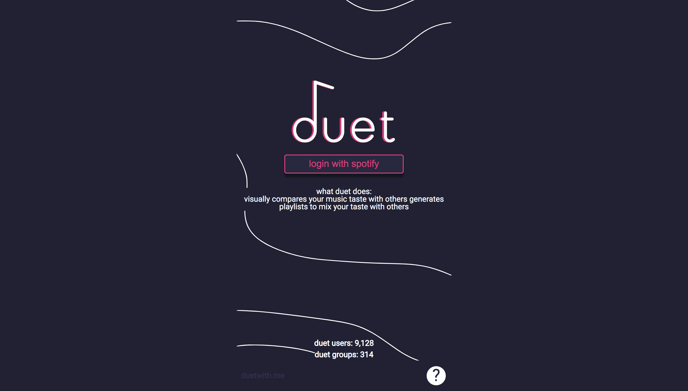
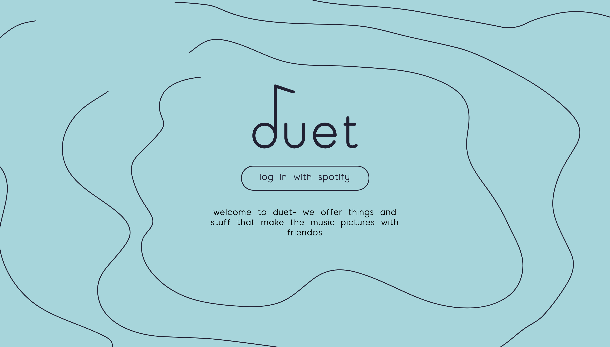
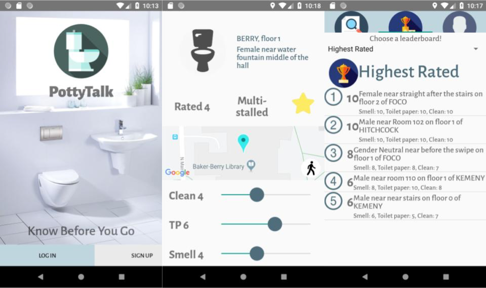
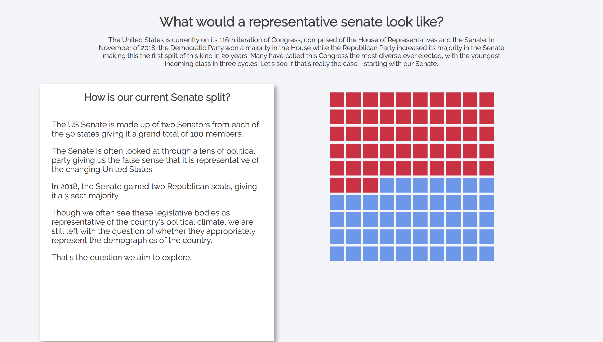
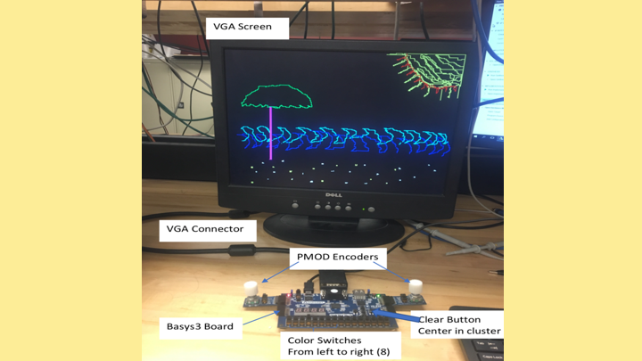

here are some things I have worked on!

NYT Explore
technologies: Sketch, React.js, HTML/CSS, GoLang, Google Analytics, MapBox, NYT Article Search API, Google Maps API

duet: the release
the second and released iteration of the project below
technologies: React.js, HTML/CSS, Redux, Flask, Python, Heroku, Rest API backend, Spotify API

duet: in beta
technologies: React.js, HTML/CSS, Redux, Flask, Python, Heroku, Rest API backend, Spotify API

PottyTalk
technologies: Android Studio IDE, RXJava, Java, jUnit, Google Analytics, Google Firebase

Senate Visualization
technologies: React.js, Scrollama Library

Digital Etch-A-Sketch
technologies: VHDL Programming, Vivado Design Suite, Block Diagram for Complex Machines, State Machines, Testbenching Parts, FPGA - Basys3, VGA, Oscilloscope
The Almond Press
technologies: AutoCAD, UX Testing, Machine Shop Certification